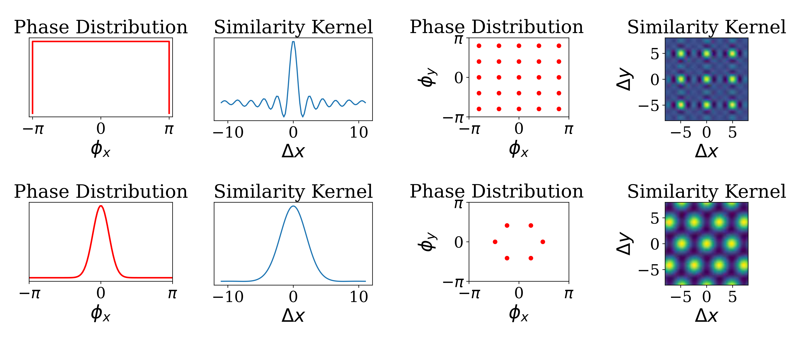
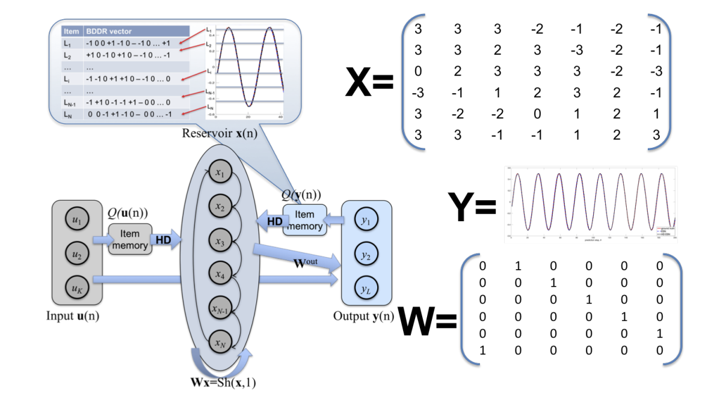
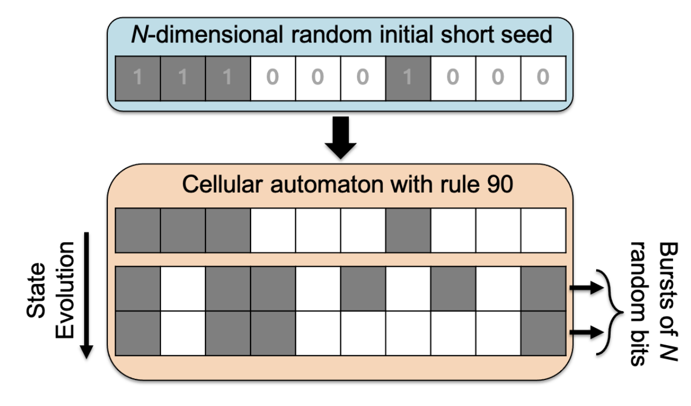
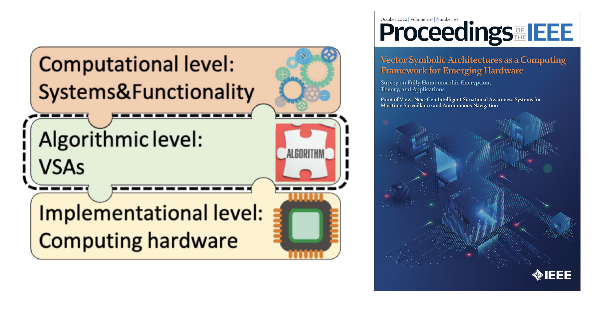

Neural Computation#
Our work in neural computation is focused on understanding neural networks and distributed computation starting from fundamental mathematical theories of high-dimensional vector spaces. Using ideas from traditional connectionism, as well as from vector-symbolic architectures (VSA), we developed several new theories and models for performing computations in neural networks in a transparent fashion.
A theory of sequence indexing and working memory in recurrent neural networks#
E. Paxon Frady, Denis Kleyko, Friedrich T. Sommer (2019). Neural Computation.
Summary#
Randomized recurrent neural networks, denoted liquid state machines or echo-state networks, were popularized based on their abilities to perform useful computations without the constraint of needing stable states. This inpsired many to think of new ways in which neural networks could be used for computation. However, many treated these networks as a black box, and little was understood as to how they performed their computations.
We identified how such randomized networks could be described based on the principles of Vector Symbolic Architectures. We realized that you could describe the operations of an echo-state network as forming a time-tag, attaching the input to the time-tag, and holding the input history in working memory. This allowed us to derive a precise theory of memory performance and scaling, as well as methods to optimize performance and memory of such networks.
Links#
Variable binding with sparse distributed representations#
E. Paxon Frady, Denis Kleyko, Friedrich T. Sommer (2019). IEEE Transactions on Neural Networks and Learning Systems
Summary#
The idea of binding has been part of the connectionist literature for quite some time. The concept of binding is not addressed in modern deep learning much at all, but often studies attempt to perform binding in unnatural ways.
Connectionists in the early 90s realized that there was a need for a way to bind information together in neural representations, and the “superposition catastrophe” was an often cited problem. Early proposals solved this problem by adding the tensor-product operation to connectionism, and Smolensky developed his theory of tensor-product representations.
The tensor product was key to solving the superposition catastrophe because it was a combinatoric operation, and fundamentally this is the issue. Connectionism needed a way to represent “blue triangle” and “red square” in ways that were unique and non-interfering. This fundamentally leads to needing an operation that has a unique result for every combination of shapes and colors.
The combinatorics of tensor products, however, leads to the undersirable result that the neural representation of information is also growing combinatorically. Hinton and other called for proposals where combinatoric representations could be described, but without the growth in dimensionality of the representation. This is where VSA was born, with Plate’s proposals of how to bind information together in a fixed dimensionality that still has access to combinatoric representations.
Since Plate’s proposals, several VSA models were developed which utilize different representations and binding operations. In this paper, we show how all of these VSA models can be unified with tensor-products through the mathematics of compressed sensing. Basically, all VSA binding operations are reductions of the tensor-product.
One of the biggest issues with linking VSA representations to neuroscience is that VSA models are typically dense representation where every vector element would correspond to neural activation. But representations in the brain are highly sparse. This lead us to explore potential new avenues for binding operations, where we desired a binding operation that maintains sparsity.
Based on the link between binding and tensor-product reductions, we explored several methods that could result in a sparsity- and dimensionality-preserving binding operation. We identified a previous proposal based on sparse block-codes that achieved all the desirable features of a sparse VSA, and illustrate how to perform computations with the VSA.
Links#
Demo of sparse binding based on Kanerva’s example What’s the dollar of Mexico?
Computing on Functions Using Randomized Vector Representations#
E. Paxon Frady, Denis Kleyko, Christopher J. Kymn, Bruno A. Olshausen, Friedrich T. Sommer (2021). arXiv.

Summary#
Vector symbolic architectures (VSA) are frameworks for computing with distributed representations like neural networks. There are multiple flavors of the framework, but each is designed to form and manipulate symbols in high-dimensional vector spaces. This is possible, and goes beyond standard artificial neural networks, because of the binding operation in VSA.
In this paper, we extend VSA ideas to vector function architectures (VFA), which can encode and manipulate data on smooth manifolds. This is possible by a fromulation for vector representations of continuous values with fractional power encoding. The idea starts with self-binding of a base vector to create a representation of integers: \(\mathbf{z}^i\) is the vector for representing integer \(i\), where \(\mathbf{z} \in \mathbb{C}^N\) is a random vector. This self-binding process can be extended to continuous values \(x\), where \(\mathbf{z}^{\beta x}\) represents a continuous number. Such a procedure is a locality-perserving encoding and produces a similarity kernel, where representations of values near \(x\) are similar to the representation for \(x\), but representations far away are different. The parameter \(\beta\) regulates the width of the similarity kernel.
In the paper, we explain how the VFA can be generalized to other flavors of VSA, such as sparse block-codes. Further, we explain how to create different types of similarity kernels based on the Bochner theorem. Further, we show how multi-dimensional kernels can be formed using the binding operation of 1-D kernels or using jointly sampled base vectors.
Finally, we show a few simple applications that links VFA to other methods in machine-learning, such as kernel methods. We also explain how the VFA architecture can be used to represent images and how image transforms, such as translation, can be implemented through simple VFA operations.
Links#
Integer Echo State Networks: Efficient Reservoir Computing for Digital Hardware#
D. Kleyko, E. P. Frady, M. Kheffache and E. Osipov. (2022). IEEE Transactions on Neural Networks and Learning Systems, 33(4): 1688-1701.

Summary#
Based on our theoretical analysis of echo-state networks, we were able to use the theory to design an optimized echo-state network for digital hardware implementations. Such a network uses a very simple permutation operation to replace the recurrent weight matrix typically used by reservoir networks, greatly reducing the computational complexity for digital devices. Further, the weights and the neural activations are always constrained to be integers, and we show how to design the integer clipping function to optimally maintain the history of information streaming into the network. We also benchmark the network on a few tasks, and illustrate some coding principles used to use these networks for dynamics modelling and other applications.
Links#
Cellular Automata Can Reduce Memory Requirements of Collective-State Computing#
D. Kleyko, E. P. Frady and F. T. Sommer. (2022). IEEE Transactions on Neural Networks and Learning Systems 33(6):2701-2713.

Summary#
Many of the applications which are based on VSA architectures require a large “item memory” to store the atomic vectors used to represent various symbols. These item vectors are typically chosen randomly, but fixed once they are chosen. These vectors, however, can be very large and require lots of memory to store. But by using cellular automata operations, we found a way to store much smaller seed vectors that can be used to reliably generate the large high-dimensional vectors used in the VSA computations. This has the potential to greatly reduce the memory cost of various VSA item memories in hardware, only at the cost of needing to run simple cellular automata for a few iterations.
Links#
Vector Symbolic Architectures as a Computing Framework for Emerging Hardware#
Denis Kleyko, Mike Davies, E. Paxon Frady, Pentti Kanerva, Spencer J. Kent, Bruno A. Olshausen, Evgeny Osipov, Jan M. Rabaey, Dmitri A. Rachkovskij, Abbas Rahimi, Friedrich T. Sommer (2022). Proceedings of the IEEE.

Summary#
Our “manifesto” paper lays out the arguments and logic for how VSAs can serve as the computational backbone of emerging computer hardware, like neuromorphic hardware. Much like boolean algebra serves as the mathematical framework by which digital computations are carried, vector symbolic architectures also provide an algebraic mathematical framework for creating parallel/distributed representations akin to neural populations. The mathematical theories behind VSA explain how the frameworks can serve as an intermediate abstraction layer between the implementation and computational levels coined by Marr. One point of highlight is how there are different flavors of VSA, where different flavors use different vector representations and operations, but also retain the same properties and can be expressed by the same algebraic formalism. This paper serves as a survey of many ideas in the VSA field, explain a lot of techniques for building data structures, details many of the recent advances of VSA and how to potentially create applications on neuromorphic hardware following these principles.